(Module Introduction)Week 1
Welcome to my DFAB elective blog! In this module, we're going to learn about Digital Fabrication and Prototyping Fundamentals. I'm so excited to share with you all the things I'll be learning throughout this journey!
During our first lesson, we were introduced to the learning outcomes of this module. Learning about Website Documentation, Computer-Aided Design (2D/3D), 3D Printing Processes, 2D Laser Cutting Processes, Embedded Controllers - Sensing & Actuation (Input & Output Devices), Prototyping Skills, Integrating Technologies, and Presenting our Final Design & Prototype.
Next, we delved into the meaning of digital fabrication which was explained my our lecturer as:
"Digital fabrication is the process of using computer-controlled machines/tools to create physical
objects from digital designs. It involves the use of Computer-Aided Design (CAD) software to create 3D
models or designs of an object, which are then converted into machine-readable instructions using
Computer-Aided Manufacturing (CAM) software to be produce in an automated fashion."
We were also given an overview of how we will be assessed for this module. Here's an image of the
assessment table:

To help us manage our time and stay on track, we were shown the schedule of the module. Here's an image
of the timeline:


Before we wrapped up the lesson, we had to register for the courses on the FabLab Management Service
(FLMS) so we could use the equipment in the FabLab. Additionally, we had to pass quizzes associated with
the courses. Here's an image of my successful completion of the courses:

I'm excited to continue learning and sharing my progress with you all. Stay tuned for more updates on my DFAB journey!
Week 2 (Website Setup & Creation)
Welcome to the second week of my DFAB elective blog! This week, we delved into the exciting world of website setup and creation. We started by exploring the importance of documentation in our projects. Documentation serves as a systematic flow of our work, showcasing our ideation process, prototyping stages, and final designs. For our first assignment, we are tasked with creating a project documentation site to effectively showcase our work.
To streamline the process and make it easier for users to access our project work, we learned about
GitHub and its features, such as GitHub Pages. GitHub is a website and cloud-based service that allows
developers to store and manage their code, track changes, and host publicly accessible static web pages.
By utilizing GitHub Pages, we can present our project work as webpages for a seamless user experience.
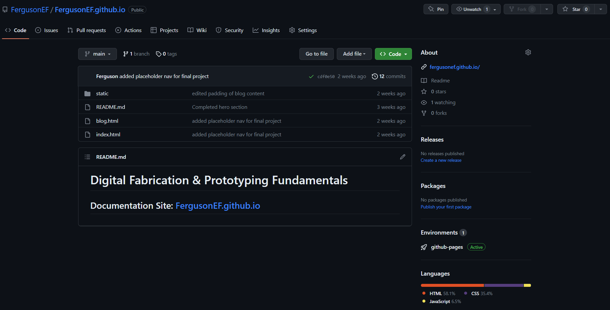
During the week, we also familiarized ourselves with Git version control, which enables us to track
changes in our project files. Git is the most widely used modern version control system, offering
cross-platform compatibility. While it is typically implemented as a command-line interface, there are
also user-friendly desktop applications available, such as GitHub Desktop for Windows and Mac. Here's a
visual representation of the Git workflow and some essential commands:
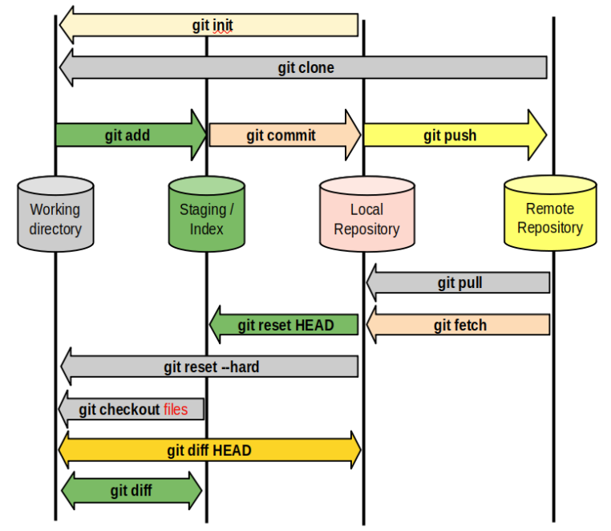
As a computing student, I have been using Visual Studio Code (VSCode) as my go-to software for most of
my coding projects. I regularly leverage the power of VSCode's integrated terminal to work with Git
seamlessly.
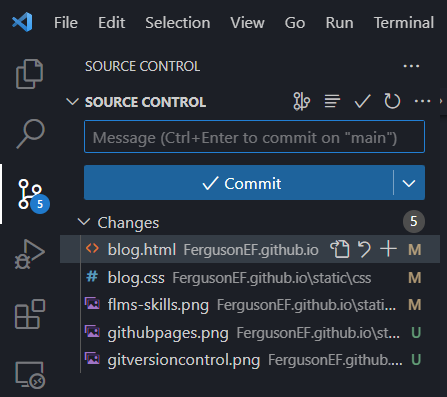
Moving on to the actual website creation, we were introduced to HTML and CSS, the building blocks of web development. Fortunately, I already had proficiency in these languages, so I confidently embarked on creating my website from scratch.
Hence before diving into the coding, I took some time to plan and design the layout using Figma. This
included selecting color palettes, determining the page layout, and envisioning the overall aesthetics.
Here's a link to my Figma file, where you can get a glimpse of my design process:
DFAB Documentation Site
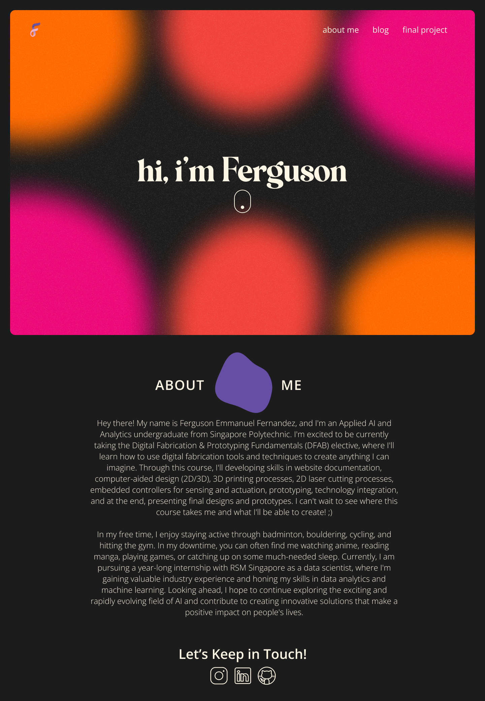
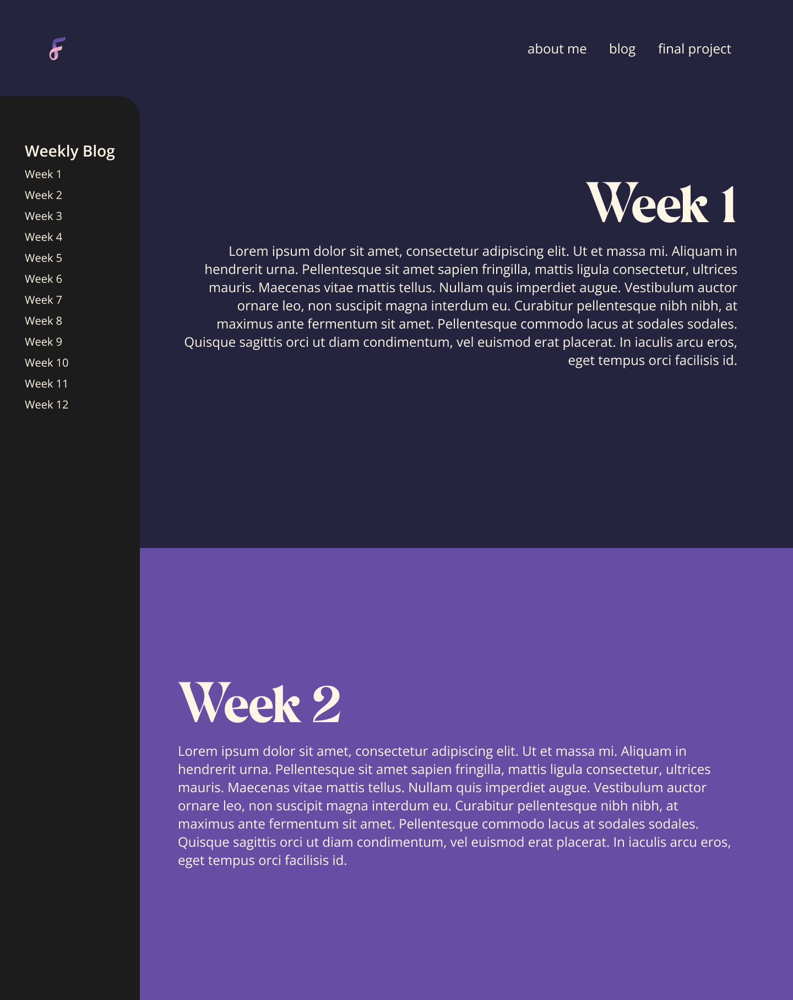
To enhance the website's functionality and visual appeal, I incorporated additional elements beyond
plain HTML and CSS. I utilized the Bootstrap framework, which allowed me to easily containerize and
create a responsive layout for my website. Moreover, I implemented various JavaScripts to bring dynamic
animations to life. For instance, I used the GSAP package to create a mesmerizing moving gradient effect
on the front page, while jQuery was employed to achieve a captivating background color change on scroll
effect for this very page.
Bootstrap Navigation Bar:
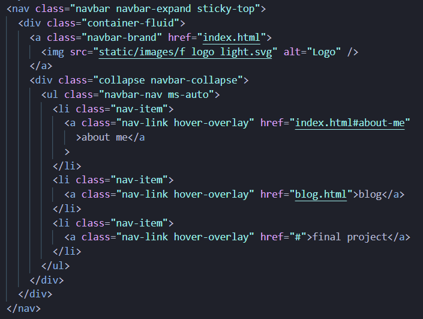
GSAP Gradient Animation:
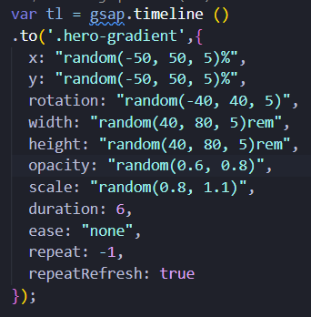
jQuery Background Color Change on Scroll:
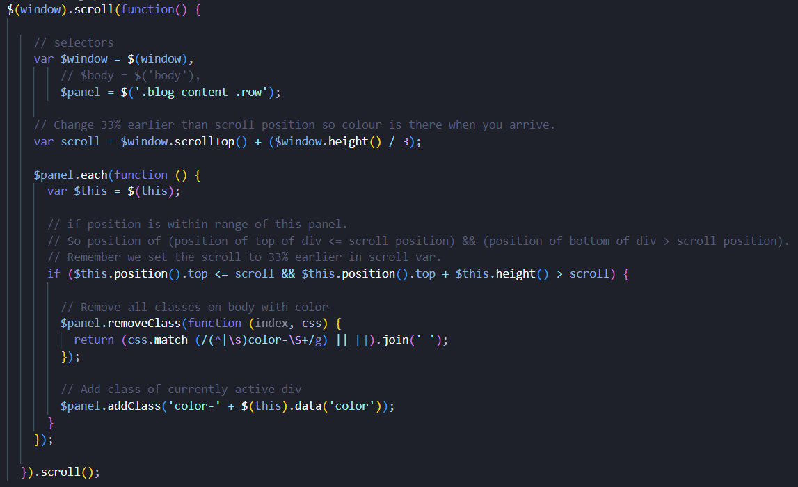
By combining my skills in website creation and design, I'm excited to present a visually appealing and interactive website that showcases my DFAB journey.
(2D & 3D CAD)Week 3
Welcome to the third week of my DFAB elective blog! This week was all about exploring the fascinating world of Computer-Aided Design (CAD) and its significance in the creation, modification, and optimization of designs. CAD software plays a crucial role in developing 2D and 3D models for a wide range of applications, including products, buildings, and mechanical parts.
Before diving into the CAD software itself, we first learned about the distinction between raster graphics and vector graphics. Raster graphics utilize a grid of colored pixels to form an image, with the quality and level of detail determined by the number of pixels used. On the other hand, vector graphics employ mathematical formulas to create shapes, lines, and curves, allowing for easy resizing without any loss of quality or detail. For raster editing, we used GIMP, while for vector editing, we utilized Inkscape.
Exercise 1: In the raster editing exercise with GIMP, we started with an original image and learned how to manipulate it using various tools and techniques within the software in order to remove the background of the image.
Original Image:
Image Processing on GIMP:
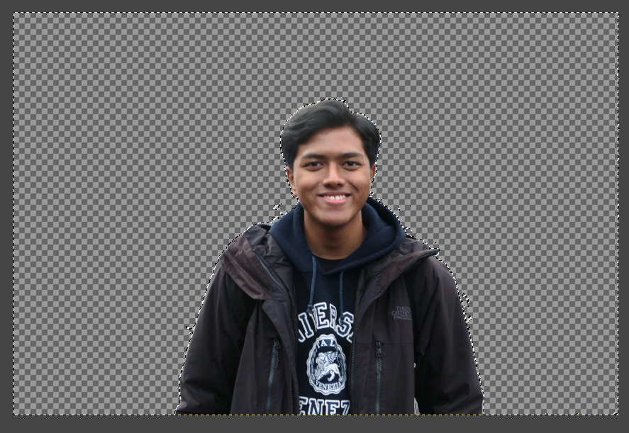
Final Image:
Exercise 2: Moving on to the vector editing exercise with Inkscape, we began by selecting a reference image and then traced it to create a vector-based representation. This exercise demonstrated the power of vector graphics in maintaining scalability and detail.
Referenced Image:
Vector Trace:
Final Vector:
After mastering the fundamentals of 2D CAD, we ventured into the realm of 3D CAD using Fusion 360. This powerful software enables us to design intricate three-dimensional models for our upcoming projects.
Exercise 3: In the sketching exercise with Fusion 360, we learned how to create and manipulate
sketches to lay the foundation for our 3D models. This involved utilizing various sketching tools and
techniques to bring our ideas to life.

Exercise 4: Building upon our sketching skills, we moved on to the sketching and extrusion exercise in Fusion 360. This exercise allowed us to transform 2D sketches into 3D models by extruding and manipulating different features.
Through these hands-on exercises, I gained valuable experience in both 2D and 3D CAD, further expanding my digital fabrication skillset. I'm thrilled to continue exploring the limitless possibilities of CAD as we progress in this elective.
Week 4 (Further 3D CAD)
Welcome back to my DFAB elective blog! In the fourth week, we continued our exploration of Computer-Aided Design (CAD), with a specific focus on the exciting world of 3D CAD. This week's lesson consisted of a series of exercises that allowed us to further enhance our proficiency in Fusion 360 and become more familiar with its user interface.
Exercise 5: We had the opportunity to build a Lego brick using Fusion 360. This exercise enabled us to apply our 3D modeling skills and get hands-on experience in creating intricate shapes.
Exercise 6: We embarked on the task of designing a name tag, this exercise allowed us to showcase our creativity while honing our skills in creating custom 3D shapes. We had the freedom to experiment with various fonts, styles, and dimensions to create a unique and personalized name tag.
Exercise 7: We challenged ourselves to build an object composed of 20 cubes that were then glued together and shelled. This exercise pushed us to explore Fusion 360's advanced features and techniques, such as creating complex assemblies and modifying objects to achieve the desired results.
Exercise 8: We were presented with the task of designing a mug with a handle. This exercise tested our ability to create more intricate shapes and apply our knowledge of Fusion 360's tools and functionalities. It allowed us to explore different design considerations, such as ergonomics and aesthetics, while maintaining the functionality of the mug.
Throughout these exercises, I gained valuable hands-on experience in 3D modeling and expanded my understanding of Fusion 360's capabilities. It was incredibly rewarding to see my ideas come to life in a virtual environment. I'm excited to apply these skills in upcoming projects and explore the possibilities of digital fabrication even further.
(2D Laser Cutting)Week 5
In the fifth week, we took our digital fabrication skills to the next level as we delved into the fascinating realm of 2D laser cutting. Building upon our knowledge of 2D and 3D CAD, we explored the wonders of Computer Numerical Control (CNC) and its applications in automated manufacturing processes. Specifically, we focused on CNC laser cutting machines, which utilize a focused laser beam to cut or engrave various materials with precision.
To begin our journey into laser cutting, we first learned about the basic settings involved in operating a laser cutting machine. The three key settings include power, speed, and frequency. Power determines the depth or thickness of the material being cut, while speed controls the movement of the laser head over the material, resulting in the depth of the cuts. Frequency, on the other hand, influences the density and type of material being cut. It's crucial to strike the right balance among these settings to achieve optimal results. Thankfully, in the fablabs equipped with laser cutters, we are provided with a recommended settings material sheet as a valuable reference.
Exercise 9: We were presented with an opportunity to expand on Exercise 6 by creating a personalized keychain for laser cutting. We were tasked with incorporating our name and a logo into the design, allowing us to showcase our creativity while applying the laser cutting techniques we had learned.
Exercise 10: We ventured into the realm of practicality by designing a laptop stand. This exercise allowed us to apply our understanding of structural considerations, ergonomics, and aesthetics to create a functional and visually appealing product.
To further enhance our understanding of laser cutting and gain hands-on experience, I had the
opportunity to attend a laser cutting course at T11C Fablab Central. This course provided me with the
necessary certification to independently utilize the laser cutters available in the FabLabs. Here's an
image of my passing of the course:
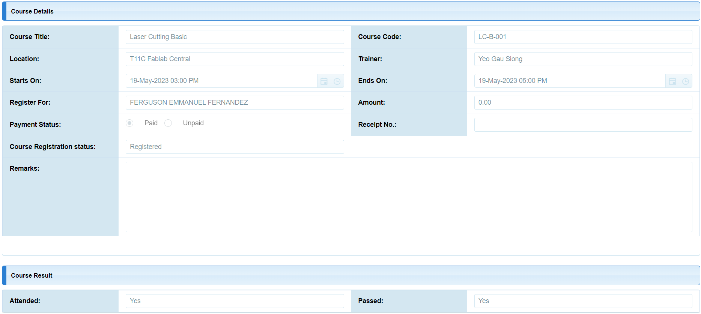
Mastering the art of laser cutting opens up a world of possibilities for creative and precise fabrication. I'm thrilled to have gained practical experience and the necessary skills to bring my ideas to life using this amazing technology.
Week 6 (3D Printing)
In week six, we dived into the fascinating world of 3D printing, also known as Additive Manufacturing. 3D printing allows us to create three-dimensional objects by building them layer by layer using a computer-controlled machine, commonly known as a CNC 3D printer.
There are several mainstream techniques in 3D printing, each with its own unique process. One popular technique is Fused Deposition Modelling (FDM) or Fused Filament Fabrication (FFF). FDM involves melting a thermoplastic filament and depositing it layer by layer to create the object. The printer extrudes the molten material through a nozzle, following a predefined path. Another technique is Stereolithography Apparatus (SLA), which uses a liquid resin solidified layer by layer using a UV laser or other light sources. The UV light selectively cures the resin, resulting in intricate and smooth surfaces. Lastly, Selective Laser Sintering (SLS) utilizes a high-powered laser to selectively fuse powdered materials, such as plastics, metals, or ceramics, layer by layer. The laser sinters the powder particles, bonding them together to form the object. SLS is known for its versatility and ability to print complex geometries without the need for support structures.
During the week, we also had an engaging discussion to share our thoughts and insights on 3D printing.
It was a great opportunity to exchange ideas, learn from one another, and explore the possibilities and
limitations of this innovative technology. Here's a snapshot of some points that were discussed:
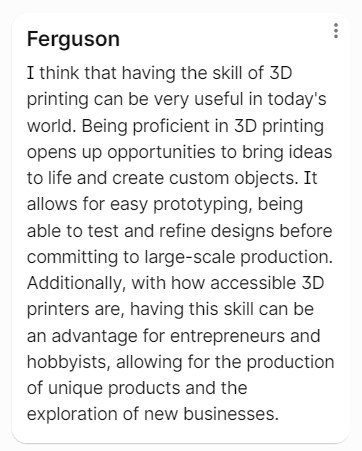
Exercise 11: We were tasked with creating a chess piece using our 3D modeling skills in Fusion 360. This exercise allowed us to showcase our creativity and design a unique chess piece.
Exercise 12: We had the opportunity to bring our chess piece to life through 3D printing.
Witnessing our digital design materialize into a physical object was truly exciting.
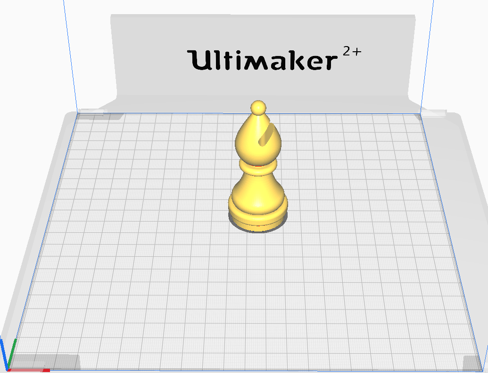
Through these exercises, we gained hands-on experience in 3D printing and witnessed the transformation of our designs into tangible objects. It was remarkable to see the precision and intricacy that can be achieved through this additive manufacturing process.
(Laser Cutting & 3D Printing Assignment)Week 7-9
Welcome to the seventh to ninth weeks of my DFAB elective blog! During this school vacation period, we were immersed in the exciting Laser Cutting and 3D Printing Assignment, which challenged us to showcase our digital fabrication skills and creativity.
Assignment 2: Laser Cutting an Accessory Box
The assignment began with an introduction to the specifications and rubrics, which initially seemed
daunting. However, I approached the task with enthusiasm and began brainstorming ideas for the design of
the accessory box.
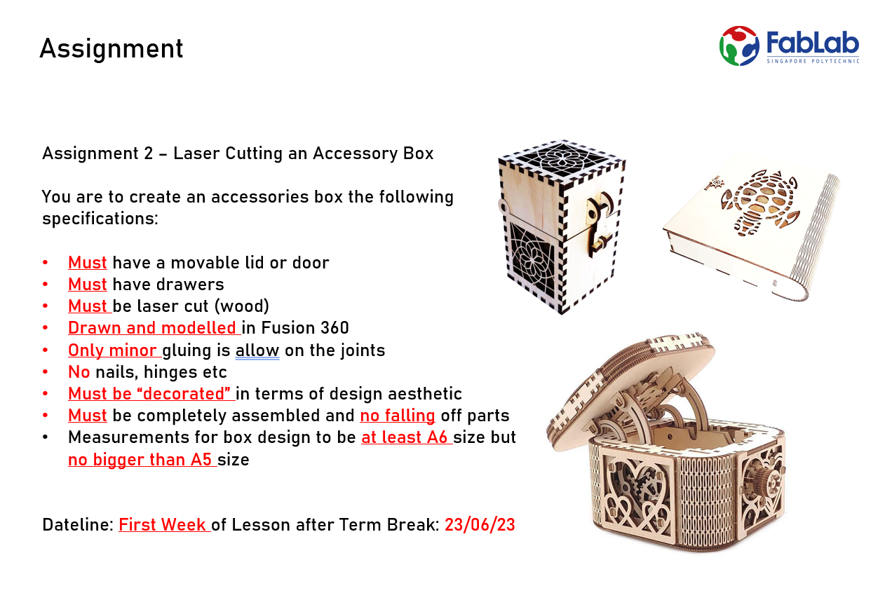
Drawing inspiration from my childhood memories of playing Minecraft, I envisioned a box resembling the iconic Minecraft chest. This design felt fitting, considering the cubic nature of laser-cut objects. To enhance the functionality, I decided to incorporate drawers into the design. Ensuring the box met the size requirements was essential to maintain its usefulness as an accessory box. To my delight, I found a reference image online that closely resembled my envisioned design, complete with a living hinge feature, which was an added bonus in meeting the rubric criteria.
With a reference image in hand, I delved into the CAD (Computer-Aided Design) stage. To boost my
confidence and refine my skills, I turned to helpful YouTube tutorials, especially for mastering the
intricacies of finger joints. These three videos played a pivotal role in my ability to create the
accessory box in Fusion 360. Additionally, I found a video that provided a better visualization of the
living hinge and its flexibility, which was essential for incorporating this unique feature into my
design.
Fusion360: New and Improved Finger-jointed Tray
Arrange Panels Flat for Laser Cutting in Fusion 360 without Arrange Tool
DXF Laser Cut Export with Automatic Kerf Compensation in Fusion 360
Living Hinges Minimum Bend Radius with Swatches for Laser Cutting Bent Plywood
After numerous iterations and countless saved file versions, I successfully completed the CAD stage. To add a personal touch, I decided to decorate the top of the box with the famous Switzerland Matterhorn mountain, while the inside featured a topographic representation of the Matterhorn location. This customization added depth and character to the design.
Now came the moment of truth — the laser cutting stage. It proved to be both thrilling and challenging. I encountered several trial and error sessions to achieve a snug fit for the finger joints, as determining the kerf compensation took time and precision. Measuring the exact thickness of the wood played a crucial role in achieving accurate kerf compensation. Despite the challenges, I persevered and finally reached a satisfactory outcome. For the top lid design, I utilized a vector cut, while the topographic design employed scoring, as it covered a larger area and required faster processing.
After countless hours of hard work and meticulous attention to detail, I am proud to present my finished product — the laser-cut Minecraft-inspired accessory box!
The journey of creating this accessory box challenged me to explore various aspects of digital fabrication, from CAD design to laser cutting. It allowed me to hone my skills, think creatively, and overcome obstacles along the way. This assignment showcased the endless possibilities that digital fabrication offers in bringing ideas to life.
Assignment 1 - 3D Printing a Handphone Stand
Let's delve into the journey of creating my 3D printed phone stand! The assignment began with the
specifications and rubrics, and I must admit, I felt a sense of relief compared to the previous
assignment. Designing a phone stand seemed more straightforward compared to the intricate accessory box.
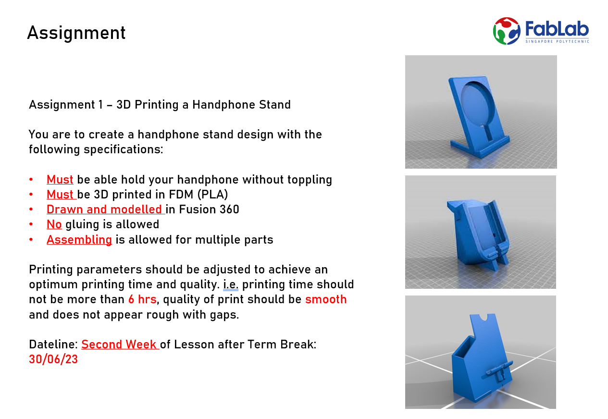
With my daily use of a phone stand in mind, I started contemplating my ideal phone stand design. I
wanted it to address common pain points, such as elevated viewing for better posture and the ability to
use it at a regular angle on a flat surface. While brainstorming, I stumbled upon a reference image that
closely resembled my envisioned design:
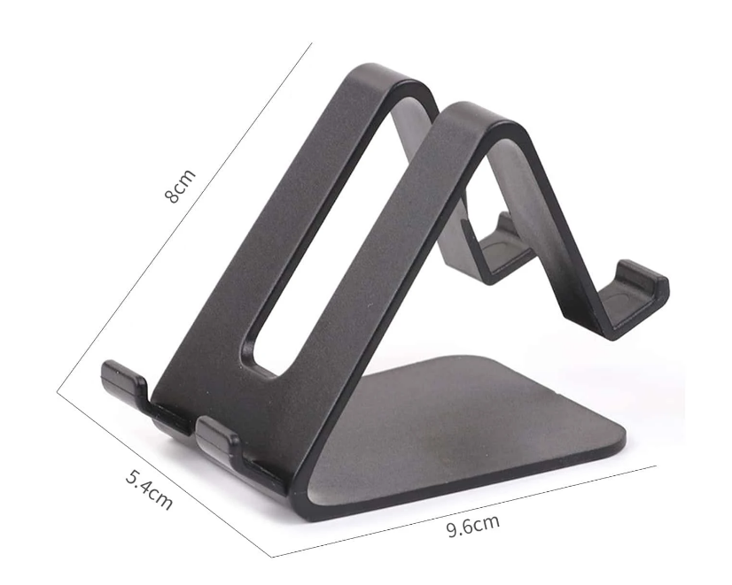
Inspired by the reference image, I imagined how my design could work, taking note of the dimensions provided. I used rulers and protractors to recreate an imaginary reference phone stand and made minor modifications to suit my specific needs. Once I finalized the dimensions, I moved on to CAD it in Fusion 360. While designing, I realised it was crucial for me to consider the center of gravity and the acting forces on the elevated section to ensure proper stability for the phone in the elevated angle position, hence the thicker base.
After finalizing my designs, I proceeded to slice them using Ultimaker Cura, which translates the 3D design into instructions for the 3D printer. As I explored the Ultimaker Cura interface, I realized there were numerous settings to fine-tune. To familiarize myself with each setting, I watched a helpful video tutorial and referred to a reliable website when deciding on the infill pattern. Through iterative tuning, I was able to significantly reduce the print time to an estimated completion time of less than 4 hours. Here's a download link to the Cura profile I used for 3D printing my phone stand. Once sliced, I sent the design to the 3D printer. Here's how my design looked in Ultimaker Cura and on the 3D printer:
Once the printing process was complete, I allowed the 3D printed phone stand to cool before removing it from the build plate. The quality of the print appeared satisfactory, with minor areas requiring sanding. With some final touches, here's the final product of my 3D printed phone stand:
The process of designing and 3D printing the phone stand was an exciting and rewarding experience. It allowed me to apply my CAD skills, fine-tune settings in Ultimaker Cura, and witness the transformation of a digital design into a physical object. The phone stand now serves as a practical accessory, addressing my desired features and adding convenience to my daily routine.
Week 10 (Embedded Programming with Arduino)
Welcome to the tenth week of my DFAB elective blog! After a refreshing short-term break, we delved into the exciting realm of embedded programming with Arduino. This week, we embarked on a digitalization journey, starting with the basics of programming and diving straight into a simplified version of the C++ language.
Embedded programming involves programming small computers to drive or operate devices, and for this purpose, we utilized Arduino, an open-source platform widely used for building electronics projects. Arduino comprises a physical programmable circuit board, often referred to as a microcontroller, and an integrated development environment (IDE) software running on our computers. The IDE allows us to write and upload computer code to the Arduino board, enabling us to bring our projects to life.
During this week, we explored fundamental programming constructs, which serve as building blocks for creating effective and functional code. These constructs include:
- Sequencing: Determining the order in which instructions occur and are processed.
- Selection: Deciding which path the program takes based on certain conditions.
- Iteration: Repeatedly executing a section of code while the program is running.
Additionally, we explored the concepts of digital and analog data representation. In digital systems, data is represented using binary digits, known as bits, with only two possible values: 0 or 1. On the other hand, analog systems represent data using a continuous range of values over a continuous scale.
To apply our newfound knowledge, we utilized Tinkercad, an easy-to-use drag-and-drop Arduino simulator. Before diving into the exercises, we were provided with a helpful cheat sheet that served as a valuable resource throughout the week. It assisted me in learning, referencing, and debugging my code.
Exercise 13: Blink an External LED
Exercise 14: 7 Segment LED Display
Exercise 15: 7 Segment LED Display Countdown Timer
Exercise 16: LED Counter using the Serial Monitor
These exercises allowed us to apply our programming skills to practical scenarios, enhancing our understanding of Arduino and embedded programming. Through hands-on experience, we gained insights into controlling external components and displaying information using LEDs.
Week 11 (Design Thinking & Arduino)
In week 11, we deviated slightly from the schedule to dive into the world of design thinking before exploring Arduino further. This shift in focus was a valuable addition as it equipped us with a powerful problem-solving approach for our final project.
Design thinking is an innovative methodology that empowers individuals to craft solutions by
understanding and addressing specific user needs. To facilitate our design research, we learned about
SPS analysis, a design thinking framework. SPS analysis comprises three key elements:
Syntactic Analysis: Understanding the materials and dimensional scale of a product.
Pragmatic Analysis: Considering the functionality and ergonomics of how a product operates.
Semantic Analysis: Exploring the contextual interaction, form analogies, and emotional connection a
product has with the user.
This newfound knowledge in design thinking provided us with a solid foundation to generate creative ideas for our final projects. We engaged in an activity where we brainstormed potential ideas, and here are a few of the concepts I came up with:
This exercise fueled our imagination and encouraged us to approach our final project with a user-centric mindset, striving to design innovative solutions to real-world challenges.
Assignment 3: TinkerCad Programming
Task 1:
Connect a LED with a current limiting resistor (220 ohm) to port 6 of the Arduino Uno board.
Write a program to blink the LED in a variety of patterns, i.e. Blink 1 time, delay(Milliseconds) then
Blink 2 time etc.
Task 2:
Using the same technique, connect 3 LEDs of different colours to the Arduino board using pins 6, 7,
and 8.
Write a program to produce running lights i.e. the LEDs are lit in sequence e.g. R -> G -> B -> R -> G
-> B and so on.
Task 3:
Add a switch to the circuit in task 1. (You should use a pull-up resistor of 10K if you are operating
in INPUT mode.)
Write a code when the switch is pressed, the LEDs will light up. Pressing the switch again will turn
the LEDs off.
Task 4:
Start with LEDs are all in the OFF state.
Pressing the switch, turns on only the RED LED.
Pressing the switch again, turns on only the GREEN LED
Pressing the switch again, turns on only the BLUE LED
Pressing the switch again, turns on all LEDs
Pressing the switch again, turns off all LEDs returning to the first state.
These assignments expanded my understanding of Arduino and embedded programming, enabling me to apply our skills to practical tasks. With each completed task, we gained confidence and refined our programming techniques, setting the stage for even more exciting projects in the future.
Week 12 (Arduino)
Week 12 was all about exploring the fascinating world of input and output devices in Arduino. These devices play a crucial role in enabling interaction between the Arduino board and the external world. They allow the board to receive information from its surroundings through inputs and trigger actions or send signals through outputs based on the programmed logic.
To deepen our understanding of these devices, our entire lesson was dedicated to completing exercises that involved various input and output devices. Let's delve into a couple of the exercises we tackled:
Exercise 17: Matrix Keypad
Exercise 18: LDR Photoresistor
Exercise 19: Ultrasonic Sensor
Exercise 20: PIR Motion Sensor
Exercise 21: Temperature Sensor
Exercise 22: Potentiometer
Exercise 23: LEDs
Exercise 24: NEOpixels
Exercise 25: DC Motor
Exercise 26: Stepper Motor
Exercise 27: Servo Motor Positional Rotation
Exercise 28: Servo Motor Continuous Rotation
Exercise 29: LCD
Exercise 30: Speaker
These exercises not only expanded our knowledge of input and output devices but also provided hands-on experience in utilizing them effectively. By working through these exercises, we gained practical insights into the capabilities and applications of these devices, setting the stage for more creative projects in the future.